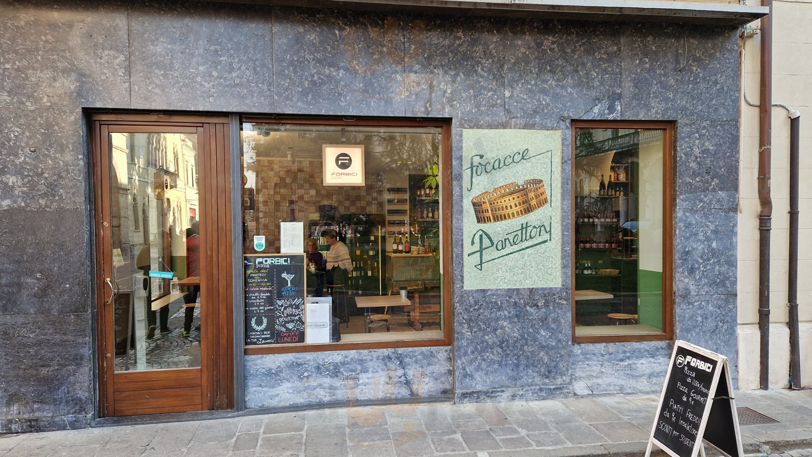

Ci vediamo
da Forbici.
Via San Francesco, 28.
35121 Padova. All’angolo con Piazza Antenore, nel cuore del centro storico.

Piccolo posto.
Grande crunch.
Forbici Pizza è pizza in teglia nel centro storico di Padova. Crunch al banco, Doppio Crunch farcito e abbinamenti gourmet: un invito a scegliere il tuo prossimo morso.
Fermati qui, porta la pizza con te oppure ordinala a domicilio. Ci trovi in Via San Francesco, 28.
Scopri cosa prepariamo
Vieni con fame.
Al posto,
ci pensiamo noi.
Prenota un tavolo con Google
Scegli data, orario e numero di persone nel servizio di prenotazione Google.
Oppure apri Quandoo
La strada giusta
porta da Forbici.
Caricando la mappa ti colleghi a Google Maps.
Apri le indicazioni
La tua pizza.
A casa tua.
Glovo, Deliveroo o una telefonata per l’asporto.
Scegli tu come ritrovarci.